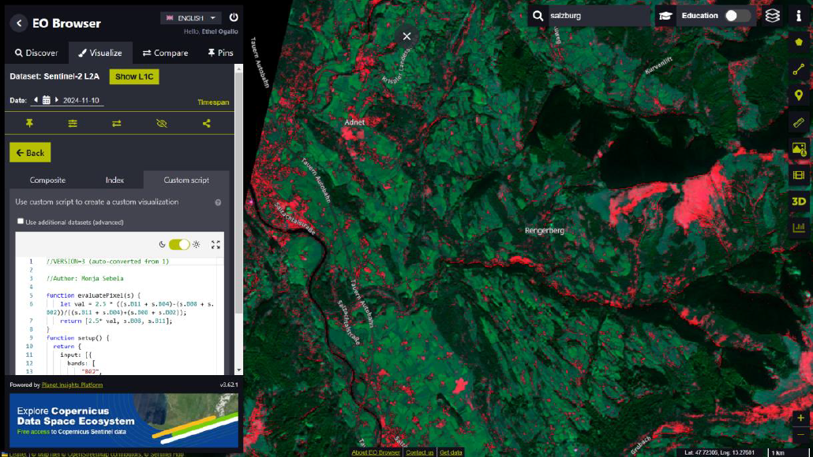

Big Data
Project 1: Temporal Analysis using GEE; Mau Forest
Introduction
Mau Forest, one of Kenya’s most vital water towers, has been experiencing significant deforestation due to human activities such as logging and agricultural expansion over the past decade or so. Monitoring these changes is essential for conservation efforts, and satellite-based remote sensing provides a powerful tool for such analysis. This project utilizes Google Earth Engine (GEE) to assess vegetation changes in Mau Forest between 2018 and 2024.
Analysis
The analysis was conducted using Sentinel-2 imagery in Google Earth Engine (GEE), where the applied the NDVI to detect vegetation change over time.
// First define an area of interest
var lat = -0.55;
var lng = 35.65;
var point = ee.Geometry.Point(lng, lat); // Corrected: swapped lat and lng
var aoi = point.buffer(1000); // Create an area (1km buffer around point)
Map.setCenter(lng, lat, 10); // Center the map on this location, zoom level 10
// Download the Sentinel-2 imagery collection
var s2 = ee.ImageCollection('COPERNICUS/S2');
// Filter the collection by location, date boundaries, and cloud cover percentage for the 'before' image
var s2_filtered = s2.filterBounds(aoi)
.filterDate('2018-01-01','2019-12-31')
.filterMetadata('CLOUDY_PIXEL_PERCENTAGE', 'less_than', 30);
// This will sort the images by lowest cloud cover first.
var sorted = s2_filtered.sort('CLOUDY_PIXEL_PERCENTAGE', true);
// Pick the first image from the sorted and filtered collection
var image = ee.Image(sorted.first());
// Calculate NDVI for the "before" image
var NDVI = image.normalizedDifference(['B8', 'B4']); // NIR: B8, Red: B4
// Define the visualisation parameters to display the image
var vizParams = {
palette: ['#FF0000', '#FFFF00', '#007F00'], // used a color pallette to highlight the vegetation
min: 0,
max: 1
};
// Add the image to the default Map.
Map.addLayer(NDVI, vizParams, "NDVI before");
// Make another map for the 'after' image.
var linkedMap = ui.Map();
// Filter the collection by location, date boundaries, and cloud cover percentage for the 'after' image
var s2_filtered = s2.filterBounds(aoi)
.filterDate('2023-01-01','2024-11-30')
.filterMetadata('CLOUDY_PIXEL_PERCENTAGE', 'less_than', 30);
// This will sort the images by lowest cloud cover first.
var sorted = s2_filtered.sort('CLOUDY_PIXEL_PERCENTAGE', true);
// Pick the first image from the sorted and filtered collection
var image = ee.Image(sorted.first());
// Calculate NDVI for the "after" image
var NDVI = image.normalizedDifference(['B8', 'B4']); // NIR: B8, Red: B4
// Add the NDVI layer for the "after" image to the linked map
linkedMap.addLayer(NDVI, vizParams, "NDVI after");
// Link the default Map to the other map.
var linker = ui.Map.Linker([ui.root.widgets().get(0), linkedMap]);
// Create a SplitPanel which holds the linked maps side-by-side.
var splitPanel = ui.SplitPanel({
firstPanel: linker.get(0),
secondPanel: linker.get(1),
orientation: 'horizontal',
wipe: true,
style: {stretch: 'both'}
});
// Set the SplitPanel as the only thing in root.
ui.root.widgets().reset([splitPanel]);Visualization Results
The NDVI maps show the changes in vegetation over time:
- Green areas → high NDVI for dense or healthy vegetation.
- Yellow areas → Moderate dense vegetation.
- Red areas → NDVI for barren land or urban areas or unhealthy vegetation.
Project 2: EO Browser for Soil Moisture Monitoring
Introduction
EO Browser is a user-friendly online tool developed by Sinergise that facilitates easy access to analysis-ready satellite data, including imagery from the Copernicus Sentinel missions. It allows users to visualize and analyze environmental conditions using Sentinel-2 Level-2A imagery, making Earth observation data accessible without requiring advanced technical expertise.
In this project, the Barren Soil Index -script developed by Monja Sebela- was applied to assess soil moisture across different regions. The Barren Soil Index leverages specific spectral bands from Sentinel-2 data to distinguish between various land cover types, such as dry soil, vegetation, and water bodies.
Analysis
//VERSION=3 (auto-converted from 1)
//Author: Monja Sebela
function evaluatePixel(s) {
let val = 2.5 * ((s.B11 + s.B04)-(s.B08 + s.B02))/((s.B11 + s.B04)+(s.B08 + s.B02));
return [2.5* val, s.B08, s.B11];
}
function setup() {
return {
input: [{
bands: [
"B02",
"B04",
"B08",
"B11",
"B12"
]
}],
output: { bands: 3 }
}
}Results
The application of the Barren Soil Index was evaluated across multiple regions to assess its performance in differentiating soil moisture levels and land cover types.
Salzburg, Austria (November 2024)
In Salzburg, the Barren Soil Index effectively highlighted the varying land cover types. The Salzach River was prominently displayed in black, indicating water bodies. Vegetation appeared in green, and dry soil was distinctly represented in red. The results provide a clear delineation of soil moisture variations, with the index offering valuable insights into the region’s environmental conditions.

Kisumu, Kenya (October 2024)
For Kisumu, located near Lake Victoria, the analysis revealed dry land in red, vegetation in green, and water in black. Cloud cover was indicated in blue. A noteworthy observation was that urban areas, typically associated with reflective surfaces such as concrete and asphalt, also appeared red. This similarity in spectral reflectance to dry soil suggests the utility of the Barren Soil Index in urban contexts.
Barbados (November 2024)
In Barbados, the index highlighted barren soil in red, vegetation in green, water in black, and cloud cover in a bluish-green hue. An interesting feature of the analysis was the appearance of a red boundary over the ocean. This could potentially be attributed to underlying dry soil on nearby islands or the influence of sensor angle, providing an additional layer of insight into the interaction between atmospheric and land features in coastal areas.
Conclusion
This analysis demonstrates the practical application of EO Browser , with the Barren Soil Index for monitoring soil moisture variations, across diverse geographical regions. The results underscore the efficacy of satellite-based remote sensing tools in environmental monitoring, particularly in the context of soil moisture and vegetation health assessment.
By utilizing Sentinel-2 imagery and advanced spectral analysis, this study illustrates the growing importance of remote sensing techniques in sustainable land management and climate monitoring. The ability to monitor land surface conditions on a global scale provides invaluable support for decision-making in agriculture, urban planning, and disaster management.
Project 3: Leveraging Sen2Cube for Seasonal Water Monitoring
What Are DataCubes?
A DataCube is a multi-dimensional array of data, typically used for storing and analyzing large amounts of Earth Observation (EO) satellite imagery. DataCubes facilitate efficient access to spatiotemporal data by organizing satellite imagery into a structure that enables fast querying and analysis over time.
Sen2Cube
Sen2Cube, developed by the Department of Geoinformatics - Z_GIS at the University of Salzburg ,provides a unique and accessible approach to satellite data analysis. It allows users to generate actionable insights from satellite imagery with a higher semantic level providing users with an intuitive web-based platform to formulate queries and analyze satellite data.
The Simple Water Count Model
For this analysis, the Simple Water Count model was employed to assess the seasonality of water bodies across several Austrian lakes. This model was specifically chosen for its ability to detect water presence in satellite imagery over time, making it ideal for tracking fluctuations in water levels. The model was adapted not only to monitor water presence over time but also to visualize spatial variations of water bodies.
By applying this model, users can calculate water counts across different seasons and identify temporal trends of water bodies. The model produces two main outputs: a graphical representation of water presence over time and a spatial map showing the distribution of water across defined periods.
Results: Seasonal Variations Across Austrian Lakes
The model was applied to four lakes in Austria: Neusiedler See, Ossiacher See, Plansee/Heiterwanger See, and Ottensteiner Stausee. The results, based on the analysis of Sentinel-2 imagery, provided valuable insights into the seasonal changes in water presence across these water bodies.
1. Neusiedler See
Graphical Results: The graph revealed that Neusiedler See showed significant seasonal variation in water presence. Higher water counts were observed during the early months (February-March) and later months (November), suggesting an increase in water levels. Conversely, July-September saw a reduction in water levels, possibly due to seasonal evaporation or cloud cover interference.
Spatial Analysis: The spatial map showed a clear reduction in water coverage over time. Lighter hues indicated areas of water, while darker hues represented non-water areas.
2. Ossiacher See
Graphical Results: Ossiacher See displayed a consistent water presence over time, with a brief period showing a 0 water count, likely due to cloud cover obstructing satellite observations.
Spatial Analysis: The spatial map showed minimal changes in water coverage, confirming the stability of water levels at Ossiacher See.
3. Plansee/Heiterwanger See
Graphical Results: The graph for Plansee/Heiterwanger See indicated a decrease in water presence between May and June, likely due to seasonal drying. November to March showed 0 water count values, which may have been caused by high cloud cover.
Spatial Analysis: The spatial map corroborated the seasonal variation observed in the graph, with lighter values indicating water presence and darker shades showing reduced coverage.
4. Ottensteiner Stausee
Graphical Results: Ottensteiner Stausee exhibited seasonal fluctuations in water presence, particularly between March and July. The reduction in water levels during this period suggests it is a seasonal water body.
Spatial Analysis: Similar to the other lakes, the spatial map displayed a reduction in water coverage, confirming the seasonal nature of Ottensteiner Stausee.